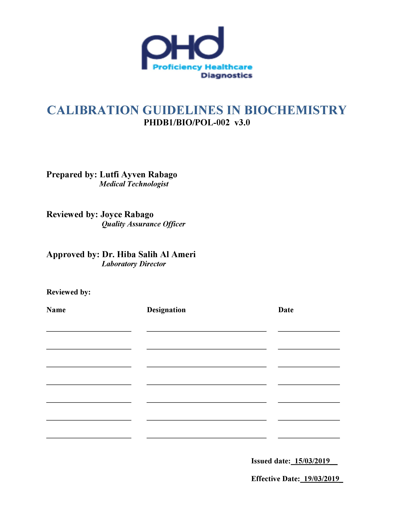

- Describes general calibration guidelines for the biochemistry section, which includes calibrator assay and validation, calibration frequency, and the storage, preparation, and handling of calibrator materials as well as troubleshooting of calibration errors.
CALIBRATION GUIDELINES in BIOCHEMISTRY
- PURPOSE
- COMPUTER PROGRAMS
- Microsoft
- PCS Labcare
- RESPONSIBILITIES
- All the staff trained and authorized in the Department of Biochemistry.
- Laboratory Director
- Quality Officers
- AUTHORITY
- Laboratory Director
- Managing Director
- Operations Manager
- INTERFACE
- COBAS 6000 Operators Manual (External document).
- PCS LAB CARE Instruction Manual (External document).
- PHDB1/BIO/SOP-028 Operation, Maintenance and Calibration of the Cobas6000 (Internal document).
- ABBREVIATIONS and DEFINITIONS
- PHDB1 –Proficiency Healthcare Diagnostics Branch 1
- OPS - Operations
- QAD - Quality Assurance Department
- LAB – Laboratory
- BIO - Biochemistry
- SOP – Standard Operating Procedure
- N/A – not applicable.
- FORMS and FILES
- Forms
- Files
- PHDB1/BIO/FIL-05: COBAS 6000 Equipment Validation File.
- PHDB1/BIO/FIL-04: COBAS 6000 Operation, Maintenance, Calibration, and Error Log File.
- PHDB1/BIO/FIL-09: COBAS 6000 LJ Charts.
- AFFILIATED TRAINING DOCUMENT
- ATF – Biochemistry Training and Competency Assessment document.
- SPECIMENS
- Refer to individual test listings
- MATERIALS
- Equipment and reagents required as per individual test SOP.
- SAFETY PRECAUTIONS
- Refer to the safety precautions given in the PHDB1 Safety Manual.
- PROCEDURES
- Storage, preparation and handling
- For specific preparation and storage requirements, please refer to PHDB1/BIO/DOC-28.1 (Cobas 6000 Calibrator Preparation and Storage Guide) as well as individual test procedures. Strict adherence to these requirements will ensure the quality of calibrator materials.
- Labeling of calibration material
- Calibrator label which includes the name of calibrator as well as the date opened or reconstituted and stability expiration and the personnel who opened/reconstituted should be recorded on each aliquot containers. Each aliquot must be labeled with the acronym of the calibrator as well as the date of reconstitution.
- Every calibrator prepared should be logged on the reagent preparation tracking form.
- Calibration frequency
- Please refer to each individual test for frequency of calibration.
- Performing calibration
- Please refer to PHD1/BIO/Sop-028 OMC for Cobas 6000 for a detailed instruction on how to perform calibration.
- Troubleshooting procedures
- If calibration fails, check stability of reagents and calibrators. Check if the correct lot is being used. Check if maintenance procedures have been done.
- Calibrator blocked or not run:
- Possible causes:
- No calibrator on board or calibrator is empty.
- Diluent not on board or diluent is empty.
- Recommended actions:
- Load the required calibrator or diluents on their correct rack positions.
- Fill the calibrator or diluent cups with sufficient amount.
- Possible causes:
- Calibration not accepted:
- Possible causes:
- The last calibration was not accepted and a further calibration request has been made, either by the system (for example, as a result of a cassette change), or by the user. Note that you can only request a further calibration once the last calibration results are accepted. However, a rerun may be requested.
- Recommended actions:
- Accept the last calibration results in the Validate tab in the Results work area.
- If the last calibration or control result was not accepted because it was flagged, follow the recommended action (displayed on the analyzer) for the flag.
- Possible causes:
- If you continue to experience problems after troubleshooting, contact Roche technical support.
- EXPECTED RESULTS
- Calibrations are performed as recommended.
- Calibration results are acceptable, therefore contributing to accurate quality control and patient results.
- The scientist is able to recognize and troubleshoot calibration errors.
- REFERENCES
- Cobas 6000 User Manual.
- Cobas 6000 Method Manual
- College American Pathologist (CAP) Chemistry and Toxicology checklist 2013.
- REVIEWS and APPROVALS
